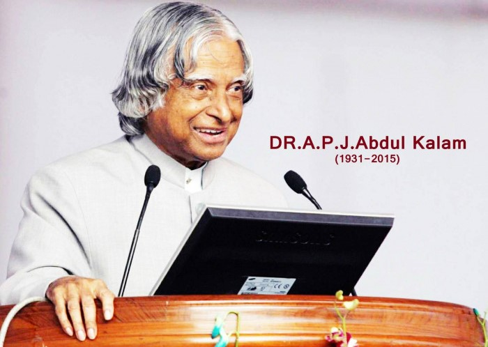

APJ Abdul Kalam
Missile man of India

- Avul Pakir Jainulabdeen Abdul Kalam was born on October 15, 1931 in Rameswaram, Tamil Nadu, India.
- He was the youngest of five siblings and grew up in a Tamil Muslim family.
- Kalam's father was a boat owner and imam of a local mosque.
- Kalam received his early education from a local mosque and then went on to attend Saint Joseph's College in Tiruchirappalli.
- He graduated with a degree in physics in 1954 and later received a degree in aerospace engineering from Madras Institute of Technology in 1957.
- After completing his education, Kalam joined the Defense Research and Development Organization (DRDO) as a scientist.
- He worked on the development of India's first satellite launch vehicle, the Rohini-1.
- In 1969, Kalam was transferred to the Indian Space Research Organization (ISRO) where he played a key role in the development of the satellite launch vehicle program.
- In the 1980s, Kalam led the development of the Prithvi and Agni missiles.
- In 1997, Kalam was appointed as the Chief Scientific Advisor to the Prime Minister of India and served in that role until 1999.
- In 2002, Kalam was elected as the President of India, becoming the country's first scientist to hold that office.
- During his presidency, Kalam focused on education and scientific research and worked to improve relations between India and Pakistan.
- After completing his term as President in 2007, Kalam returned to teaching and writing.
- He continued to be an advocate for science and technology education until his death on July 27, 2015.